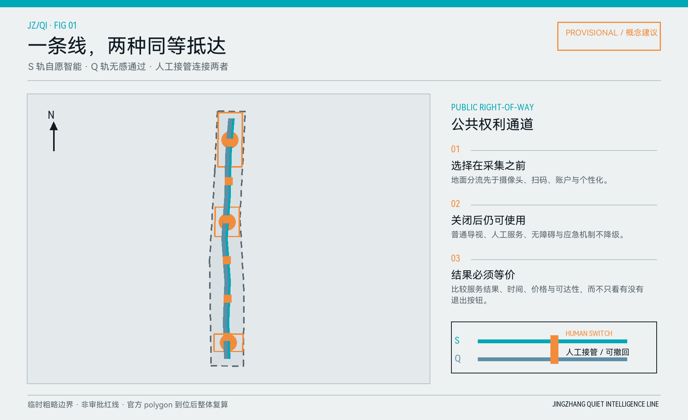
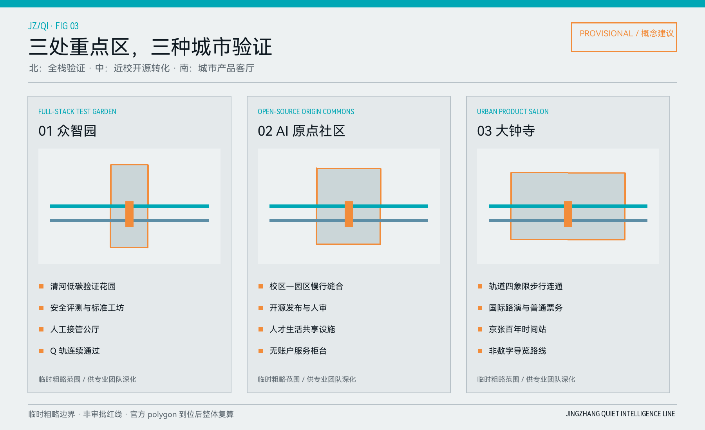
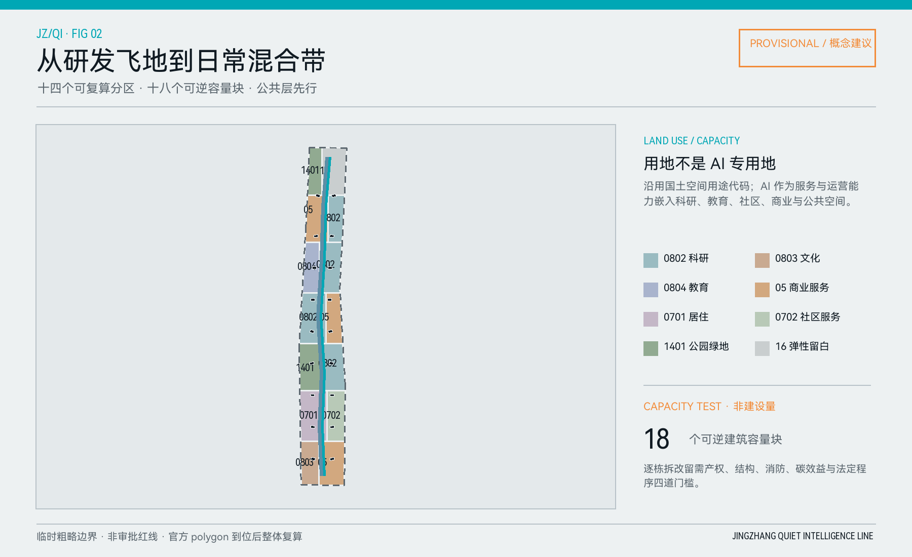
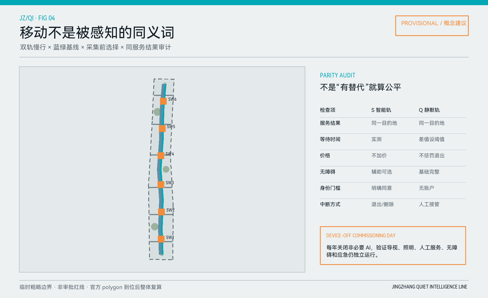
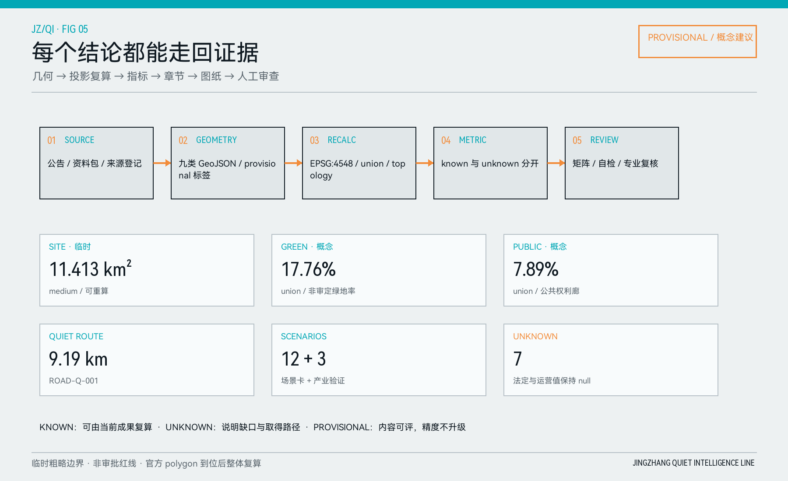

STRATEGY / 统筹研究
从“展示 AI”到“验证可靠使用”
高校策源、开源协作、企业转化、公共体验和国际传播形成一条可追踪链；六个全球案例只抽取开放底图、登记、测试、参与和审计机制。
JINGZHANG QUIET INTELLIGENCE LINE · 2026
可选择的智能、可抵达的安静、有人接管的服务。把“无感通过”画成一条连续公共权利通道，并证明关闭 AI 后城市仍然好用。
临时粗略边界 · 概念建议 · 非审批红线
主动选择 · 智能增强
无传感器 · 无账户 · 同等抵达
一线、双轨、三站、六阈值、十二场景。S 在自愿同意后增强服务，Q 在任何时候保持普通公共服务。

战略层研究产业和未来城市机制；总体层组织更新、用地、交通和公共空间；重点层以可运营原型验证。
STRATEGY / 统筹研究
高校策源、开源协作、企业转化、公共体验和国际传播形成一条可追踪链；六个全球案例只抽取开放底图、登记、测试、参与和审计机制。
STRUCTURE / 总体设计
十四个用地单元、十八个容量块、双轨与蓝绿空间共同表达；容积率、高度、密度和退线在正式控制条件缺失时保持 unknown。
PROTOTYPE / 重点设计
众智园验证全栈安全，原点社区验证近校开源转化，大钟寺验证城市产品与国际交往；三者都保留 Q 轨和人工服务。
同一治理底线，不同产业角色。详细设计包含功能、建筑接口、慢行、蓝绿、场景、人工接管与实施依赖。

AI 不成为新的土地类别；它作为可撤回服务嵌入混合城市。容量测试不等于批准建设量，普通移动不等于被感知。


十二张卡都带 Before / During / After 三段证明；其中三张为产业测试验证。以下不是技术购物清单，而是空间与责任合同。
01–04 / MOVE + TEST
静默优先通勤、开源发布与人审、低速配送共路、清河低碳设施巡检。
采集前分流现场停止员05–08 / SERVICE + VISIT
成果转化助手、社区健康人工转接、知识产权柜台、国际访客导览。
普通支付人工转接09–12 / BASELINE
无障碍路径协同、夜间安静监测、维护工单助手、设备关闭联合调试日。
断网可用恢复回执研发工程师初创团队高校师生国际访客周边居民一线运维
更新项目先公共、后建设；实施以正式资料和专业审查为触发条件。运营用公开台账和年度停机日验证基线。
| 更新项目 | 首要动作 | 停止 / 深化门槛 |
|---|---|---|
| JZ-01 / 02 | 双轨标识、六处选择阈值、人工服务台 | 公众走查与无障碍审查 |
| JZ-03 / 04 | 重点区首层公共界面、蓝绿修补 | 官方边界、控规、市政与文保条件 |
| JZ-05 / 06 | 交通断点整治、三类产业测试 | 交通专项、场景合同与现场停止规则 |
| JZ-07 / 08 | 公开登记、设备关闭联合调试日 | 等价服务失败则先修复基线 |
近期：可逆公共设施中期：三重点区协同长期：年度审计迭代
每个结论可回到来源、几何、复算、指标、章节和人工审查。临时边界不阻断内容评价，但不能被升级成精确法定结论。

公告 1.3 / 1.4 / 1.5 与 agent.1–agent.6 共 23 项均映射到章节、九类 GeoJSON、指标、A3/A0、来源、假设和自检。
拓扑 PASS指标复算 PASS离线页面 PASS边界 PROVISIONAL